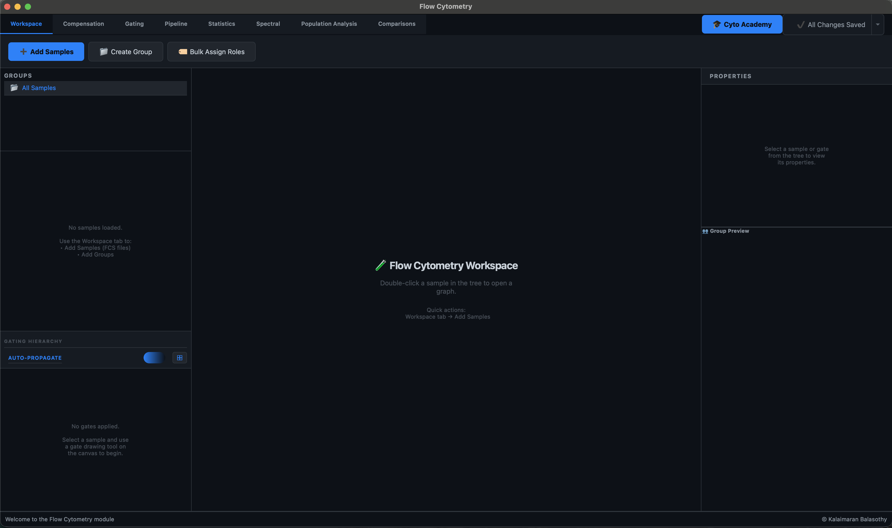
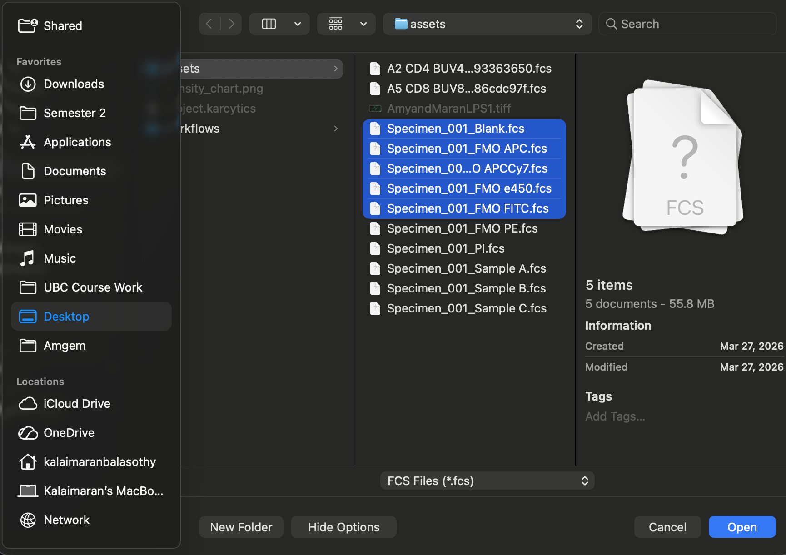
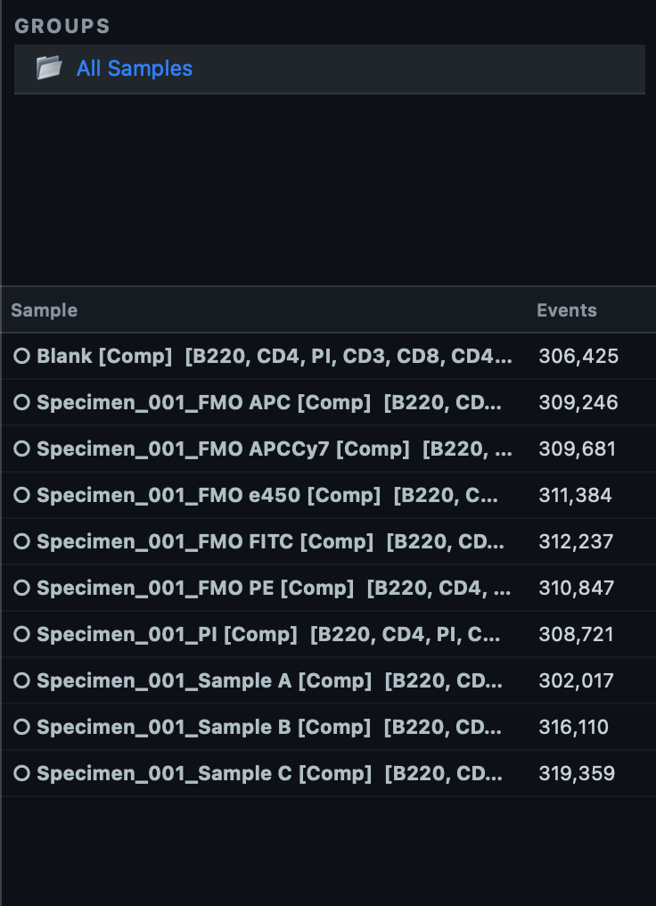
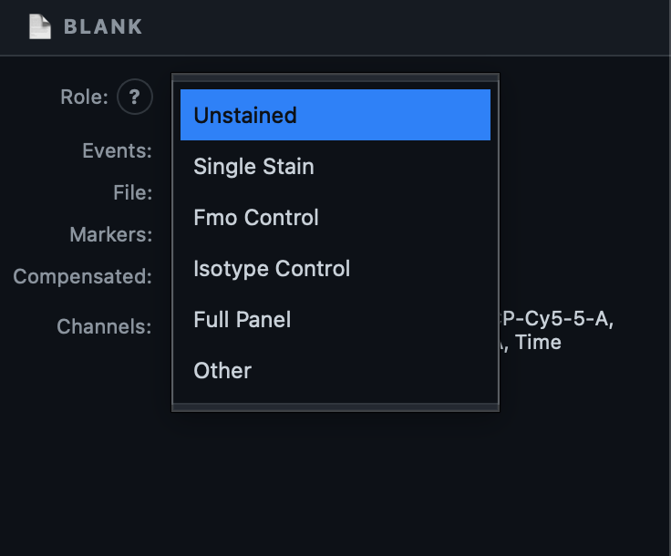
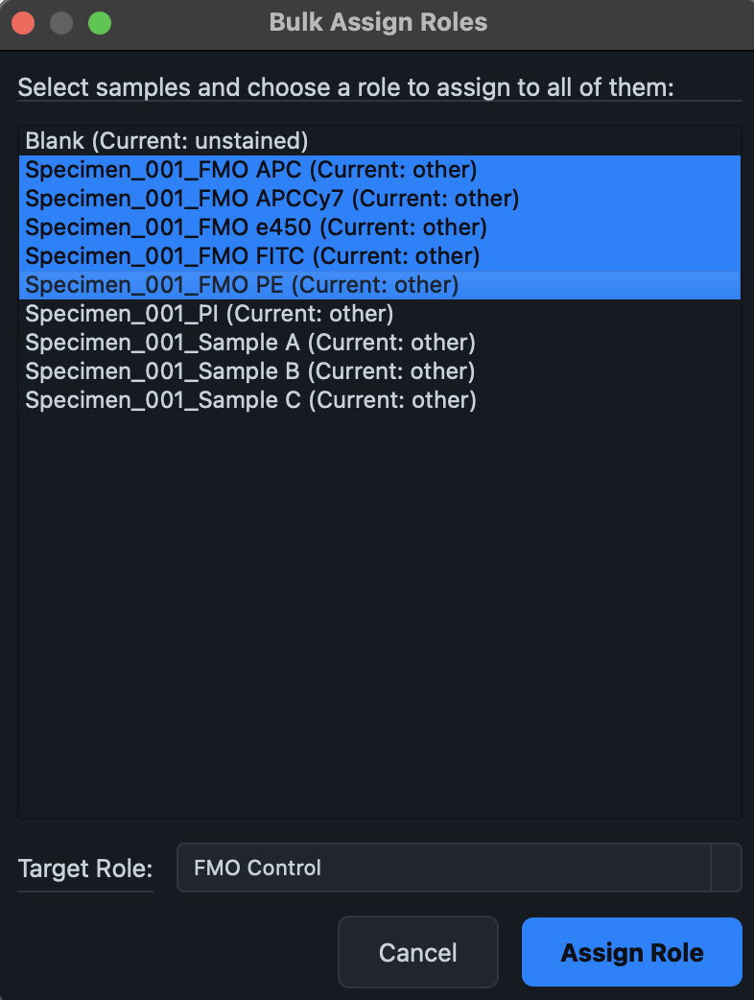
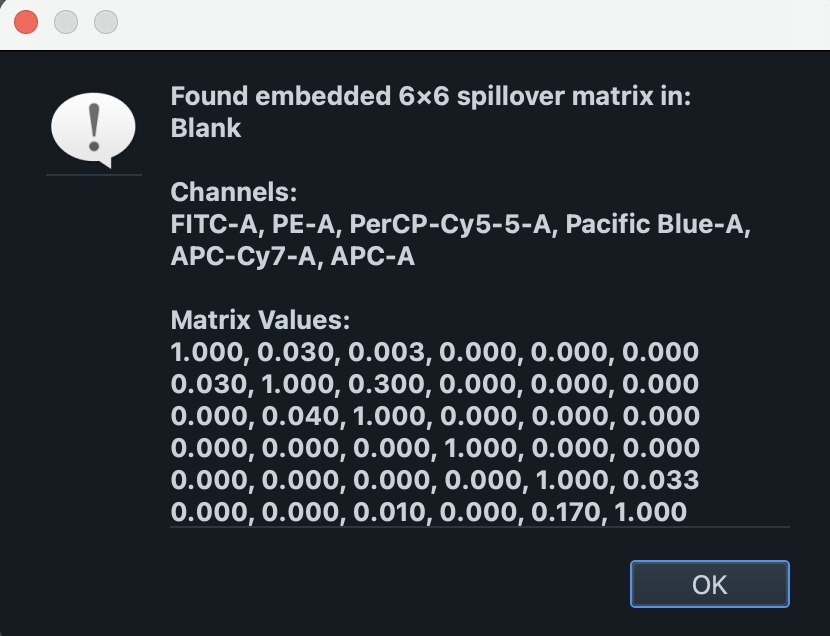
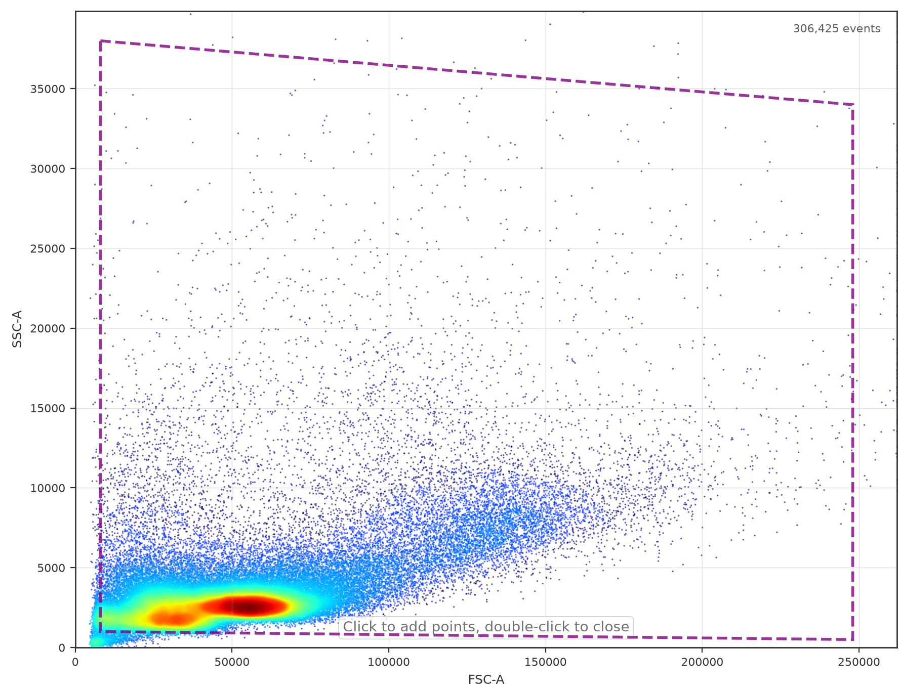
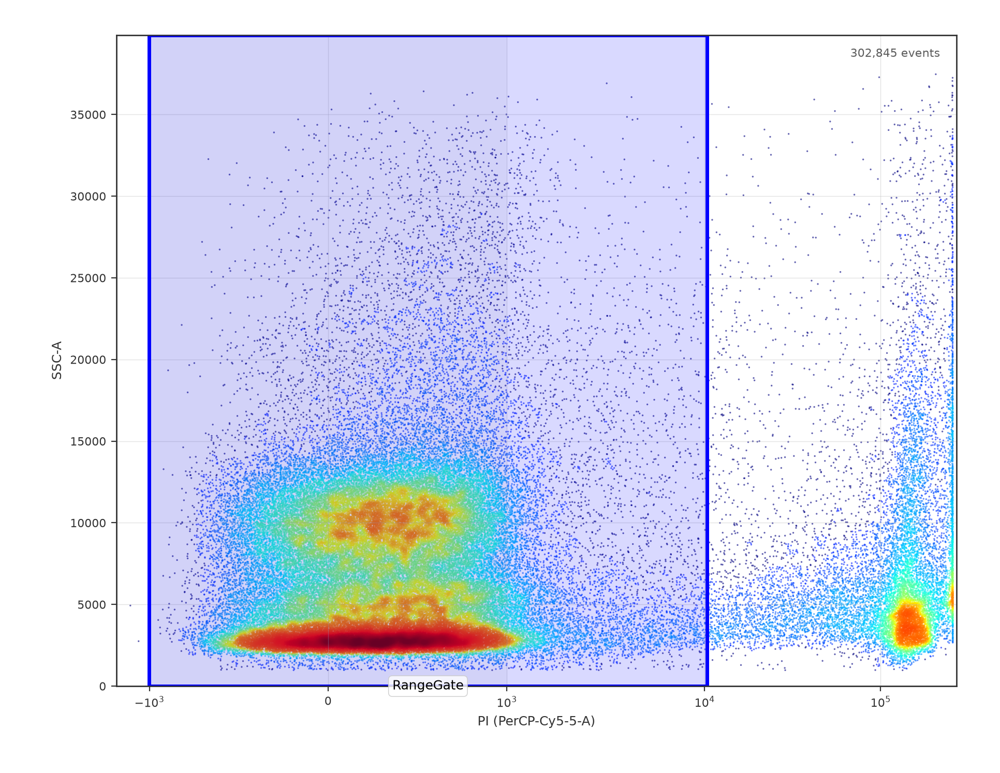
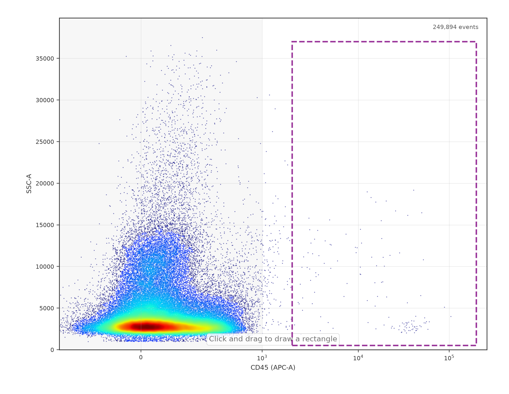
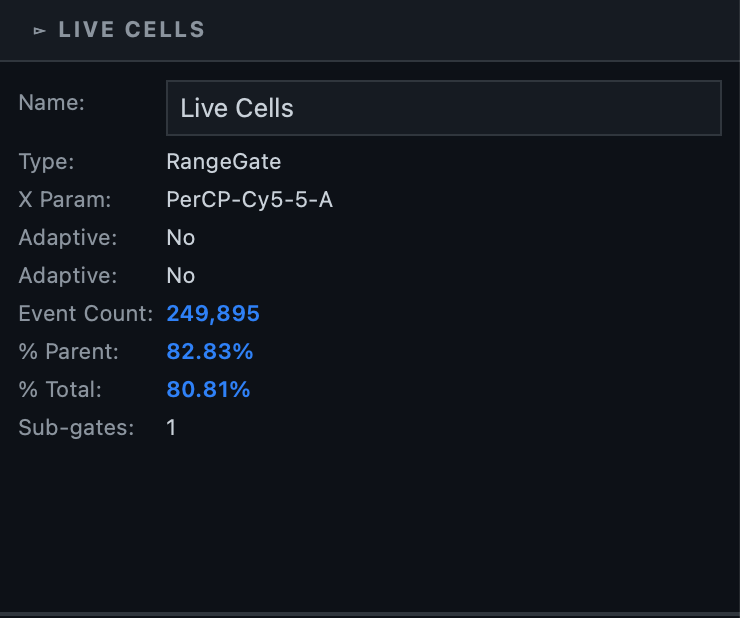

Getting Started
The fastest way to learn: the Academy
Before reading any further, consider clicking the 🎓 Cyto Academy button in the top-right of the tab bar. It opens Flow Cytometry Fundamentals, a guided, hands-on course that walks you through everything on this page — loading files, compensation, and your first gating hierarchy — using its own demo data, with Karcytics checking your actual work at every step. See Academy & Guided Tutorials for details on what each course covers.
If you'd rather read through the workflow first (or you're working with your own data right away), this guide walks the same path in writing — the same sequence Course 1 of the Academy teaches, minus the spotlighting and automatic checks.

What you'll need
Any .fcs file (FCS 2.0, 3.0, or 3.1) will load. To follow every step below — including compensation and boundary-based gating — you'll ideally have:
- One Unstained control (no dye — establishes autofluorescence baseline).
- One or more Single Stain controls (one fluorophore each — used to compute spillover).
- One FMO (Fluorescence Minus One) control per marker you plan to gate on — every dye except that one, so you can see exactly where true background ends.
- Your actual experimental samples.
You can still follow along with just your experimental files — you'll simply skip the compensation and FMO-boundary steps.
Step 1 — Load your FCS files
Make sure you're on the Workspace tab (the leftmost tab), then click ➕ Add Samples in the ribbon.
- A file picker opens — select all the
.fcsfiles you want to work with (multi-select is supported). - If any of the files live outside your current project folder, Karcytics asks whether to copy them into the project's own
assetsfolder. Say yes if you want the project to stay portable and self-contained. - A progress dialog tracks the load. Once it finishes, your files appear in the Sample List on the left, and the footer bar confirms how many samples loaded.

Compensation might already be done for you
If a file has a $SPILL keyword embedded in its header (common for data exported from acquisition software), Karcytics extracts and applies that spillover matrix to every sample automatically the moment they're loaded. Look for a small [Comp] tag next to a sample's name in the Sample List — that's your sign it's already compensated. If you don't see it, you'll build a matrix by hand in Step 3.
Step 2 — Understand Groups
Before assigning roles, glance at the Groups panel above the Sample List. Every sample you just imported sits in one default group, All Samples. A group is simply a named subset of your samples, and it controls something important: gates you draw on one sample only propagate automatically to other samples in the same group.

For most single-experiment work, the default group is all you need — you don't have to create a custom one. Reach for 📁 Create Group only when you're mixing tissue types or experiments that genuinely need different gating strategies, so their gates don't interfere with each other.
Step 3 — Tag every sample with a Role
Roles tell Karcytics what each file is, which drives compensation math and boundary detection later. The core roles are:
| Role | Meaning |
|---|---|
| Unstained | No dye — establishes the autofluorescence baseline |
| Single Stain | One dye only — used to compute the spillover matrix |
| FMO Control | Every dye except one — reveals the true background for that marker |
| Full Panel | A real experimental sample, fully stained |
| Isotype Control | Validates antibody specificity |
To assign roles one at a time: double-click a sample in the Sample List to open it, then use the Role dropdown in the Properties Panel on the right.

For multiple samples that share a role (all your FMO controls, for instance), it's faster to use 🏷️ Bulk Assign Roles in the Workspace ribbon — select every file that shares a role, set it once, and click Assign.

Step 4 — Set up compensation
Switch to the Compensation tab.
If Karcytics already auto-applied an embedded matrix in Step 1, every sample already carries its [Comp] tag — you can still walk through this tab to see (and verify) exactly what was applied:
- Click 📄 Extract from FCS — this reads the
$SPILLkeyword from the first file that has one and opens a dialog showing the extracted matrix values (the diagonal is normally 1.0; off-diagonal values show how much light spills between detectors). - Click ✅ Apply to All to apply it across every sample. If it's already applied, Karcytics simply tells you the samples were skipped because they're already compensated.

If none of your files carry an embedded matrix, tag your Single Stain controls with their role in Step 3 first — Karcytics uses exactly those controls to compute a spillover matrix algorithmically, the same math described in Scientific Logic.
Note
Compensation never touches the scatter channels (FSC/SSC) — only fluorescence detectors carry dye spillover.
Step 5 — Build your first gates
Switch to the Gating tab, where the Rectangle, Polygon, Ellipse, Quadrant, and Range drawing tools live in the ribbon.
5a. Isolate real cells from debris
Open your Unstained (or otherwise dye-free) sample by double-clicking it in the Sample List — it's the best baseline because with no dyes involved, differences on the plot come down purely to physical size and complexity. The plot opens by default on FSC-A (Forward Scatter — roughly cell size) vs. SSC-A (Side Scatter — roughly internal complexity).
Select the Polygon tool, click around the main cell cluster to trace it (excluding the debris cloud, usually near the bottom-left corner), double-click to close the shape, and name it something like Cells when prompted.

Once it's drawn, it appears immediately in the Gating Hierarchy panel on the left, and — because Auto-Propagate is on by default — it's copied to every other sample in the same group in the background.
5b. Gate live cells with a viability marker
If you have a viability dye (e.g. a single-stain propidium iodide/PI control), open that sample next. Set the X axis to that dye's detector channel using the X: dropdown above the plot.
Two things happen automatically: Karcytics opens the sample directly at your Cells population (it always preserves your gating context between samples), and the axis switches itself to Biexponential — because compensated fluorescence data can legitimately dip slightly negative, and only a biexponential (Logicle) scale displays that correctly.

Seeing a clipped edge?
By default the plot trims the extreme 0.1% of outliers so a stray spike doesn't blow out your scale. If a population looks cut off at the edge, open ⚙ Transforms and set Outliers to 0% to see the full tail.
Select the Range tool and drag across the dim (live) population to capture it, then name the gate something like Live Cells. Nest it under Cells by drawing it while that population is open — the hierarchy tracks parent/child relationships automatically.
5c. Anchor a marker gate to a true background (FMO)
For any lineage marker you want to gate on, open its matching FMO Control first — since it contains every dye except that one, any signal it shows in that marker's channel is pure background, not staining.

Draw a gate (typically Rectangle or Range) that starts just past that background tail — since this sample has zero real signal for the marker, everything in view genuinely is background, so you can set the boundary with confidence before ever looking at a stained sample. Watch the Group Preview panel (bottom-right of the Properties Panel) as you draw — it live-previews the same gate landing on every other sample in the group.
Then open a real stained sample to confirm: the exact same boundary should now separate the negative cluster from a clear positive population.
The axes won't jump around on you
The first time you pick a channel for an axis, Karcytics calculates the zoom once and then locks it for that channel across every sample in the group. That's deliberate — it means switching between controls and real samples never re-zooms or jumps the view out from under you.
Step 6 — Check your statistics as you go
With any gate selected in the Gating Hierarchy, the Properties Panel on the right shows its live statistics: Event Count, % Parent (share of its immediate parent population), and % Total (share of the whole tube), updating instantly as you refine the gate shape.

For a broader view across every sample and population at once, see the Statistics guide.
Step 7 — Save your workflow
Once you have a gating hierarchy you're happy with, click the Save Workspace button in the top-right of the tab bar, next to the Academy button.
- The first time you save, a small dialog asks for a name (and optional description) for the workflow.
- After that, the same button updates your saved workflow in place — it visually indicates when you have unsaved changes, so you always know whether it's safe to close the workspace.
Your saved workflow — every sample, group, role, compensation matrix, and gate — can be reopened later from your Karcytics project, exactly as you left it.
Where to go next
- Workspace, Compensation, and Gating — deeper detail on each tab you just used.
- Pipeline — see your gating strategy as a flowchart instead of a tree.
- Statistics and Comparisons — once you have more than one gate, these are where the real analysis happens.
- Academy & Guided Tutorials — Course 2 and Course 3 pick up exactly where this guide leaves off, building immunophenotyping, Pipeline mastery, statistics, and unsupervised population analysis on top of the workflow you just saved.